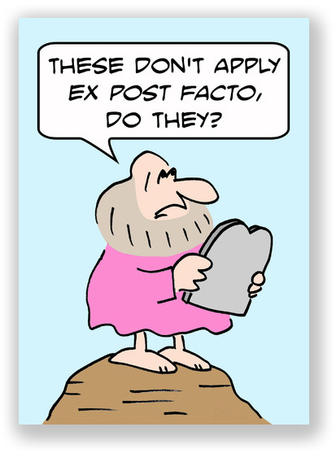
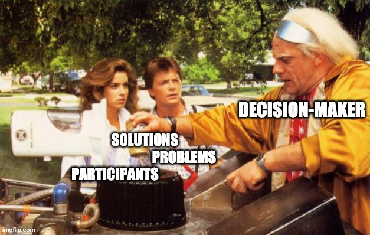

Policy Paradox, The Art of Political Decision Making
Part II, #Goals
Equity
*As a means of distribution:
Membership
Merit
Rank
Group-based Distributions
Need
Value
Lotteries
Competition
Elections
Income inequality
Democratic inequality (I would call it political inequality)
Efficiency
Social welfare
neoliberalism
Keynesianism
Rationality
Full information
Voluntarism
Externalities
Public goods
Welfare (careful with this one)
Intrinsic vs. instrumental needs
Material vs. symbolic needs
Individual vs. relational needs
Moral hazard
Absolute vs. relative needs
Cumulative harms
Material harms
Amenity effects
Psychic harms
Spiritual and moral harms
Negative liberty
Positive liberty
Positive obligations
Paternalism
Freedom of speech
Multiculturalism
Polity
Low probability/high impact events
Precautionary principle
Risk assessment/analysis
psychological security
Surveillance, border control, prisons, weapons
<!– # Example of key term posts/exam answers
ex post facto laws are laws that punish people for actions that occurred prior to the law’s enactment. In the U.S., they are considered violations of due process rights and prohibited by Article 1, Section 9 of the U.S. Constitution. This concept is important to public policy because it restricts policy options to rules about future behavior. An example of an ex post facto law would be making it illegal to have vaped any time in the past ten years”–such laws are broadly seen as unfair and thus illegitimate because one should be able to know what rules they are to follow.


Transparency requirements are policies that give citizens, journalists, and affected parties’ rights to know what government officials are doing. These are important to public policy because policymakers make different decisions if those decisions could face public scrutiny and because more stakeholders may be able to participate in more open policy processes. However, they may cost public resources and time, potentially delaying policy. Critics call them “red tape.” Examples include requirements to give the public notice of or access to meetings (as required by Wisconsin’s Open Meetings Law), requirements to publish draft policies (as required by the Administrative Procedures Act), requirements to study the effects of government decisions (such as Environmental Impact Statements required by the National Environmental Policy Act), or release government records upon request (as required by the Freedom of Information Act).
Today’s @washingtonpost @tiktok_us brought to you by @dataeditor and FOIA officers https://t.co/fgVDRGFa03 pic.twitter.com/2pPtwPi0mD
‚Äî Dave Jorgenson üí° (@davejorgenson) July 25, 2019
The garbage can model is a model of decision-making developed by Cohen, March, and Olsen, who argue that organizations are “organized anarchies” and make decisions based on the flow of problems, solutions, and participants into the choice opportunities they call “garbage cans.” It was the foundation of Kingdon’s “Multiple Streams” metaphor. It helps us understand public policy because it suggests that policy decisions are made with limited information, problem definitions, and choices–we should not expect decision-makers to make rational or comprehensive decisions. Examples could include almost any policy. One example from our class was Parisi’s landfill gas initiative that connected the problem of what to do with the gas with the solution to inject it into the pipeline that just happened to run through the landfill, which only came up because a consultant on a previous project (a participant) suggested it. It was not the result of strategic planning.

The multiple streams model is a model of policymaking developed by Kindon, who argues that policy results from a change in the problems, policy (solutions), and/or political “streams” that create windows of opportunity for a policy that brings these streams together. It is based on the garbage can model. It helps us understand public policy because it suggests that policy decisions are made only when certain conditions occur, which requires changes in the political environment, problem definitions, or available solutions. It also suggests that policies are not the result of rational, linear thinking, but rather the linking of available problems, solutions, and political will. An example would be surveillance policies that were not politically acceptable solutions to government counter-terrorism efforts until the change in the political stream after the 9/11 attacks.